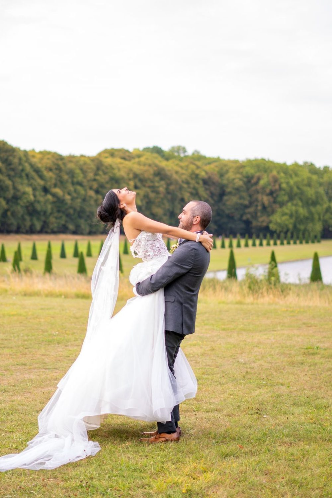
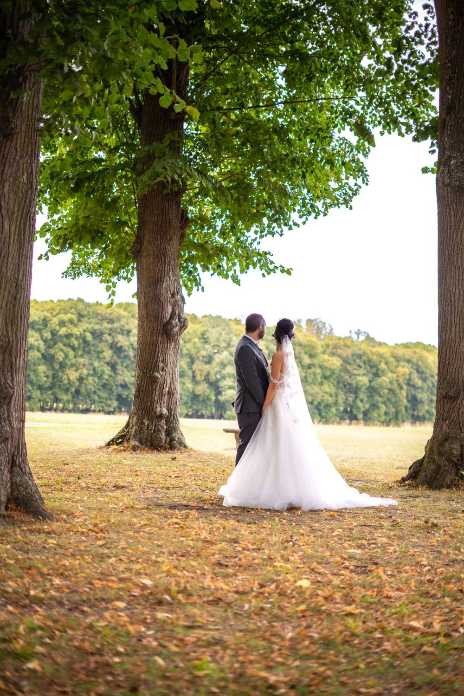
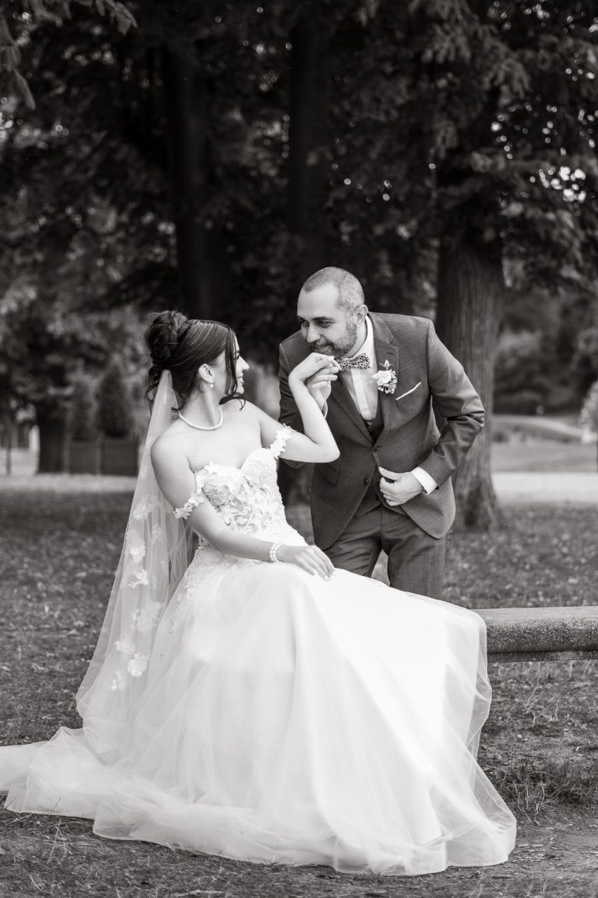

Photographe et vidéaste de mariage à Paris 4e
Pierre ancienne, quais, ruelles médiévales. Un mariage dure une journée et se regarde toute une vie. Nous le photographions et le filmons du premier regard dans le miroir à la dernière danse. Nous vous proposons de commencer à Notre-Dame et son parvis, puis de poursuivre à Place des Vosges.

Où faire votre shooting
Pour un mariage à Paris 4e, votre journée peut se photographier et se filmer entre la Place des Vosges, l'Île Saint-Louis et Notre-Dame et son parvis. Le premier regard peut avoir lieu sous les arcades de brique rouge, avant une marche lente autour du jardin carré. Sur les quais de l'île, les péniches accompagnent les portraits de couple quand le jour décline. Le film de mariage garde aussi une séquence devant la cathédrale, la Seine en arrière-plan de votre étreinte.
Sur place
Pierre ancienne, quais, ruelles médiévales. Les quais de l'île Saint-Louis offrent des reflets dorés au coucher du soleil.
Côté vidéo, le film de mariage reprend les voix et les sons de la journée : vœux, discours, rires. Photo et vidéo sont pensées ensemble, pour que les deux équipes ne se gênent jamais.
Sur les quais de l'île Saint-Louis, le coucher du soleil dore la pierre et l'eau : réservez-y vos 30 à 45 minutes de portraits à deux. Si le cortège se déplace en métro, la station Pont Marie dépose les invités tout près.
À Paris 4e, vous êtes à Métro Saint-Paul, Hôtel de Ville, Pont Marie : nous préparons l'itinéraire entre les lieux avec vous.
Nos lieux pour cette séance
Notre-Dame et son parvis
Vue sur la cathédrale et la Seine. Un fond d'architecture pour les portraits des mariés, avec le temps de poser sans presser vos invités.
Place des Vosges
Arcades de brique rouge et jardin carré.
Île Saint-Louis
Quais, péniches et hôtels particuliers.
Rue des Rosiers
Boutiques, façades colorées et rues étroites.




Avant de nous écrire
Où faire les photos de couple d'un mariage dans le 4e arrondissement de Paris ?
Pour les photos de couple d'un mariage à Paris 4e, nous enchaînons la place des Vosges pour ses arcades, puis les quais de l'île Saint-Louis pour la lumière dorée du soir. Les deux sont proches, ce qui laisse du temps aux portraits sans écourter le cocktail.
Peut-on réserver un photographe et vidéaste mariage à Paris 4e en une seule fois ?
Oui, un mariage à Paris 4e peut être couvert en photo et en vidéo par notre duo : l'un photographie, l'autre filme. Du premier regard à la dernière danse, vous recevez des photos et un film qui racontent la même journée sous deux angles.
Comment venir à Paris 4e ?
Métro Saint-Paul, Hôtel de Ville, Pont Marie. Nous nous déplaçons avec notre matériel photo et vidéo.
Faites-vous des mariages de plusieurs jours ?
Oui. Nous couvrons soirée du henné, mariage civil, cérémonie et lendemain si le programme s'étend sur plusieurs temps.
Parlons de votre mariage
Demander un devisMariage ailleurs en Île-de-France
© Le Couple Photographe · Photographe de mariage Paris & Île-de-France · Mis à jour le 10 octobre 2026
Demander un devis